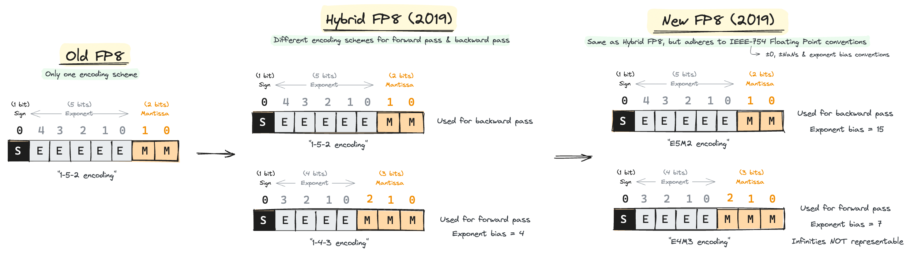

In our last post, we saw the jump from FP32 to FP16, but can we go even lower? Let’s dive into the next frontier: FP8. We’ll be deep-diving into two significant papers that made FP8 training possible. The first introduced the hybrid FP8 format and the second refined it into a generalizable IEEE-754 floating point capable of training models as large as GPT-175B with minimal performance loss.

Introduction of FP8 Formats that Use Two Encodings
From ("HFP8 Training & Inference"; Sun et al, 2019, IBM; [1]).
This paper first introduced the idea of using different formats of FP8 for forward and backward passes. Whereas old FP8 MPT papers were representing all FP8 in 1-5-2 format(1 sign bit, 5 exponent bits, and 2 mantissa bits), this paper proposed to use 1-4-3 for the forward pass while using E5M2 for the backward pass.
Essentially, tensors during the forward pass needed higher precision while gradient tensors during the backward pass needed larger dynamic ranges. Intuitively, accommodating a larger dynamic range during the backward pass is crucial since the direction of the gradients is more important than its exact magnitude(i.e. more precision) for training to converge.
The paper shows two effects of incorporating a new encoding format:
1. 1-4-3 HFP8 represents FP32 better than previous 1-5-2 FP8
The figure shows that using the 1-4-3 encoding scheme leads to a lower mismatch probability, meaning that 1-4-3 FP8 is a better representation of the FP32 baseline than the previous 1-5-2 FP8 scheme.
However, it is noticeable in the weight quantizations figure(right) that using 1-4-3 HFP8 without bias leads to errors especially in the last layers. This is largely due to underflow of FP8 and to mitigate this the authors proposed using a fixed exponent bias of 4. There are indeed issues with imposing a hard-coded exponent bias, but these concerns will be covered later in the post in the next paper.
2. Smoother Loss Landscapes with 1-4-3 HFP8
Plots for 1-5-2 FP8(b & e) show a "rougher" loss landscape that is more difficult to optimize over than the 1-4-3 HFP8(c & f).
Fine Print: These loss visualizations are more for developing intuition on possible effects of HFP8 on optimization. Visualizing high dimensional landscapes can be misleading as the plots depend on which two directions(if it's a 2D plot) you sample from a high dimensional space.
Q. Does this extend to other models?
The models they tested with seemed to show that HFP8 is generalizable, but in modern day ML we do not know if things work for sure until we test it at a large scale.
And the next paper went on and tested HFP8 at scale while fixing its limitations.
Enter the New, Generalizable FP8 Format
From ("FP8 Formats for DL"; Micikevicius et al, 2022; NVIDIA, Arm, Intel; [2]).
The joint research team between NVIDIA, Arm, and Intel went and modified and tested the two-encoding-scheme FP8 at scale, applying it to models as large as GPT 175B. Let's first look at the results below.

Note: The baselines in this paper are models trained in FP16/BF16, not FP32.
Benchmarks can't be trusted as much anymore, but there's no denying that these are impressive results. I doubt FP8 is capable of replacing FP16, but this opens up a lot of potential for places needing fast-iteration with less compute. I'll return to this thought later, but for now let's dive into how the new FP8 format is different.
Here are the key points of the modified FP8 format from the previous HFP8 format:
This is a key characteristic of the new FP8 representation. While the E5M2 format follows the IEEE-754 conventions for representing Infs and NaNs, the E4M3 does not. Specifically, E4M3s cannot represent infinities anymore. This frees up multiple bit patterns available to represent other normal values. Essentially, the new E4M3 format extends the dynamic range in exchange for not being able to represent infinities.
This is a big change and I’m curious to see peculiar training behaviors that might arise due to this. The odd E4M3 format will only be used during the forward pass, so we’ll have to be careful with log-based loss functions where infinities have served well. Other actions such as taking softmax or attention masking with infinities are other minor issues to consider.
Recall that the previous 1-4-3 HFP8's representation fixed their exponent bias to 4. This did not adhere to the conventions of IEEE-754 Floating Points. The new FP8, on the other hand, adheres to the IEEE-754 convention by setting a fixed exponent bias of \(2^{\text{e} - 1} - 1\), where \(\text{e}\) is the number of exponent bits. This results exponent biases for E4M3 and E5M2 to be 7 and 15, respectively. This makes conversion between other IEEE-754 floating points easy.
They also renamed 1-4-3 FP8 to E4M3 and 1-5-2 FP8 to E5M2. This naming scheme has become the standard that's used in NVIDIA Transformer Engine docs[3] and Open Compute Project docs[4].
Benefits of Following IEEE-754 Floating Point(FP) Convention
Recall that the HFP8 formats did not follow the IEEE-754 FP conventions by using a fixed exponent bias of 4 and not clearly stating how they represented special values. This brings two problems.
- Complicated Conversions
Though it is doable, conversions are complicated and create room for error. - Cannot use algorithms built for IEEE-754 FPs
Comparing and sorting IEEE-754 FPs is done efficiently using assumptions of IEEE FP conventions, such as assuming NaNs are represented by all exponent bits set to 1 and a non-zero mantissa.
The new FP8 format that adheres to IEEE-754 FP conventions allow previous software for IEEE-754 FPs to be used on FP8s, at least the E5M2 formats though not applicable to E4M3 formats.
Q. If exponent biases are that large, how do they deal with underflows or overflows?
Exponent bits of a floating point representation choose how large the "window" of representable range can be[5]. We can only represent numbers that fit inside this "window" and there are two ways to do this.
One is moving the window itself. This can be done by changing the exponent bias, which was used in the HFP8 paper[1] by setting an exponent bias of 4. Let's see a visual example below. Assume we have a hypothetical scenario where the distribution of gradient values are as below. First, let's see how well an exponent bias set to 0 represents the gradient values.
We see a problem where a good portion of gradient values are lost as they are too small. But here's the change when the exponent bias is set to 4 instead of 0.
Notice how the window size remains the same, but it was shifted to better accommodate values appearing in higher frequencies. Here's the combined visualization in one plot.
One caveat of this method is that we need to analyze the gradient statistics of the model during training and adjust the exponent bias accordingly. Some models may prefer one exponent bias while other models may prefer a different exponent bias. Inventing floating points with different exponent biases every time you train a different model is a pain as it creates a lot of overhead converting between one another. You can see how this method is not a generalizable solution. The next method, however, is a lot simpler.
The other way is to keep the window as it is and instead move the numbers to fit this window. We do this by scaling the numbers with a constant. Let's see a visualization below.
This is the approach the new FP8 uses. We rely on tensor-scaling to make sure all the numbers (ideally) fit within the window while keeping the window fixed. The only caveat is that the window is fixed with an exponent bias of 7 for E4M3 and 15 for E5M2.
Note: The idea behind tensor-scaling is similar to loss-scaling. Whereas loss-scaling chooses one scalar to multiply the loss tensor by, tensor-scaling keeps one scalar per tensor to multiply by. Though this is a lot of overhead, it accommodates the wide distribution of ranges that each tensor carries. For example, elements in one tensor may be close to overflowing on the negative end while elements in another tensor may be close to overflowing in the positive end. It is not possible to accommodate both tensors with a single scalar.
Easier 8-Bit Inference with FP8
The final benefit of FP8 format is a rather obvious one: inference in 8-bit is much easier.
Normally, models trained on FP16/BF16 will have to incorporate quantization-aware training or go through post-training quantization(PTQ). This step could be skipped if, of course, training is done in FP8 from the start.
Micikevicius et al[2] also show that training models in FP8 results in higher accuracy during inference than models that go through PTQ as shown below.
Closing Thoughts
More than FP8's potential for efficient training and inference, I believe its true benefits lie in bringing a new paradigm in approaching ML problems.
The more we advance with reliable reduced precision, we're able to reconsider approaches that we've historically dismissed as too compute-expensive. Evolutionary algorithms, for example, is one such approach that could benefit largely from this.
FP8 will be at the heart of efficient scaling and new approaches which leverage its quirks will be fused with existing methods to advance the frontiers of what is possible.
References
[2] Micikevicius et al. 2022. "FP8 Formats for Deep Learning."
[3] NVIDIA Transformer Engine Documentation.
[4] Open Compute Project 8-bit Floating Point Specification.